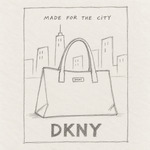
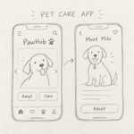
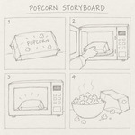
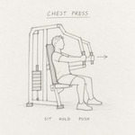

Advertising
DKNY City Bag
A structured handbag anchors the poster. The skyline behind its handles connects the product to New York.
Four pencil-style concepts exploring how people use an interface, read an image, and follow a sequence.

Advertising
A structured handbag anchors the poster. The skyline behind its handles connects the product to New York.

Interface design
Two mobile screens take a visitor from browsing dogs to meeting Milo and finding the adoption button.

Visual storytelling
Four panels follow a bag from the counter to the microwave and finish with a bowl of popped corn.

Information design
A side view keeps the seat, handles, and weight stack visible. Three short verbs explain the movement.
I’m interested in the decisions that make a design easy to follow, from the position of a button to the order of four storyboard panels.